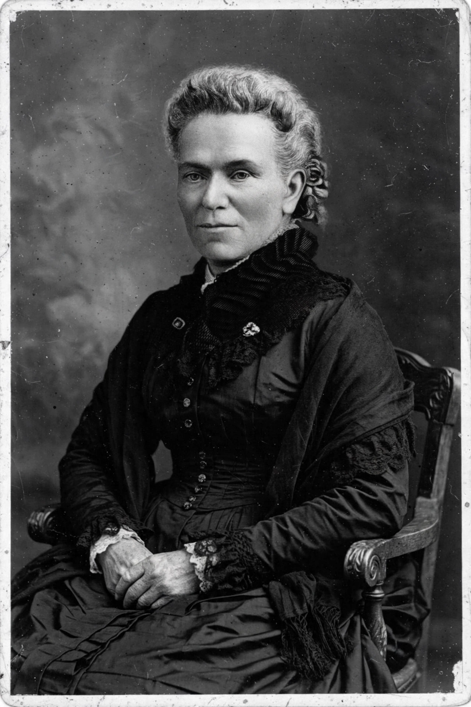

The Matilda effect is the systematic under-recognition, and sometimes outright denial, of the contributions of women scientists, whose work is often attributed to male colleagues. The term was coined in 1993 by the science historian Margaret W. Rossiter, who named it for the American suffragist and abolitionist Matilda Joslyn Gage, whose 1870 essay "Woman as Inventor" documented the pattern a century earlier.
Rossiter presented the Matilda effect as the female counterpart of the Matthew effect described by sociologist Robert K. Merton — the tendency of already-famous scientists to receive disproportionate credit ("to those who have, more shall be given"). Where the Matthew effect inflates the credit of the eminent, the Matilda effect deflates that of women, so the two biases compound.
Subsequent studies in the sociology of science have documented related disparities in citations, prizes, invited talks, and the attribution of collaborative work, and the concept is now standard in discussions of gender bias in academia.